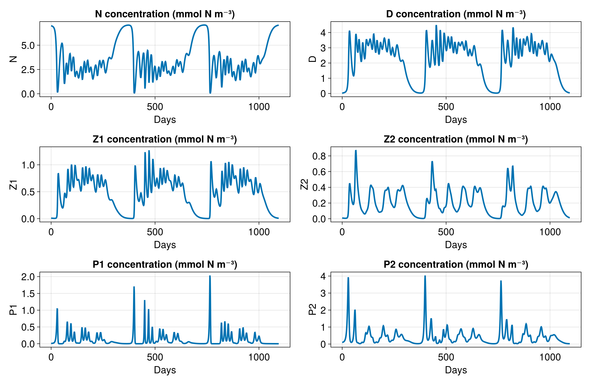
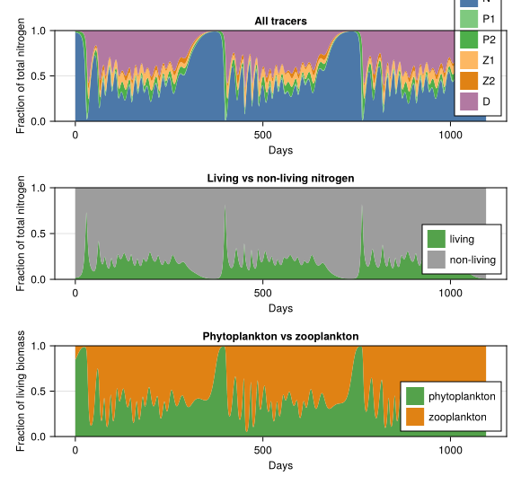
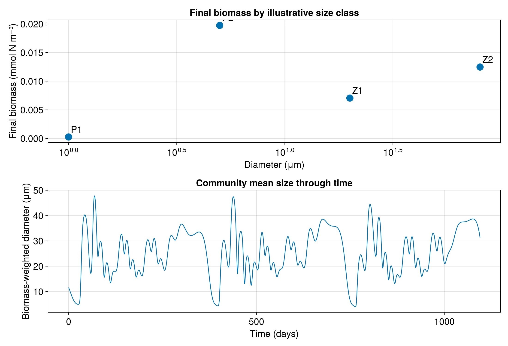
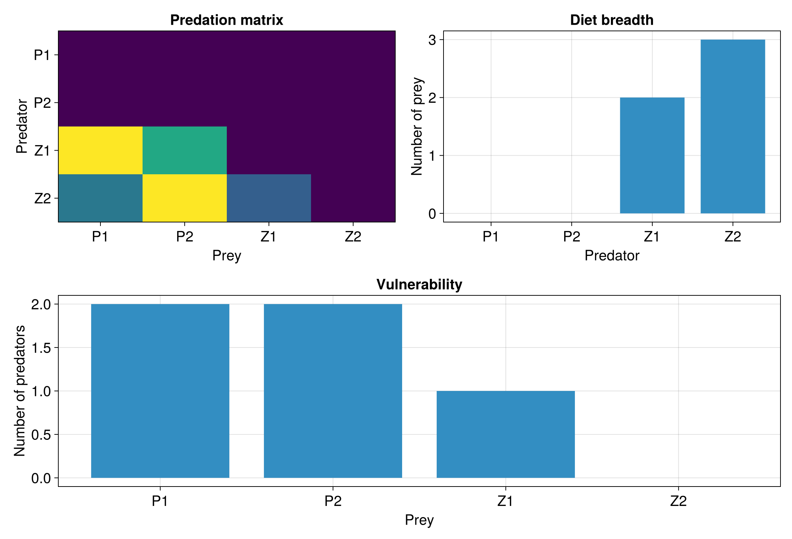

Exercise 02: Diagnostics
This exercise introduces reusable diagnostic functions from src/WorkshopDiagnostics.jl. The functions live in src so that later exercises can reuse them, but the calls are shown here explicitly.
Loading dependencies
using CairoMakie
include(joinpath(@__DIR__, "..", "src", "WorkshopSetup.jl"))
mkpath(joinpath("outputs"))
mkpath(joinpath("figures"))
Run the Quick start model
The diagnostics operate on saved box-model output. We reuse the wrapper from Exercise 01 to create a small output file.
bgc = default_quickstart_bgc()
run = run_box_model(bgc; filename=joinpath("outputs", "02_diagnostics_quick_start.jld2"))
timeseries = read_box_tracer_timeseries(run.filename, run.tracer_syms)
times = timeseries.times
data = timeseries.data
[ Info: Initializing simulation...
[ Info: ... simulation initialization complete (1.628 ms)
[ Info: Executing initial time step...
[ Info: ... initial time step complete (117.440 μs).
[ Info: Simulation is stopping after running for 3.618 seconds.
[ Info: Simulation time 1095 days equals or exceeds stop time 1095 days.
Tracer concentrations
plot_tracer_concentrations follows the per-tracer plotting pattern from the Quick start exercise, but grows the figure vertically for larger communities.
fig_tracers = plot_tracer_concentrations(
times,
data,
run.tracer_syms;
figure_path=joinpath("figures", "02_diagnostic_tracer_concentrations.png"),
)
Relative nitrogen contributions
plot_contributions sums phytoplankton and zooplankton tracers, then compares their relative contributions with nutrient and detritus pools and with each other.
fig_nitrogen = plot_contributions(
times,
data;
figure_path=joinpath("figures", "02_diagnostic_relative_nitrogen_contributions.png"),
)
Community-weighted mean size
The default Quick start does not expose a single canonical size diagnostic, so the workshop uses an illustrative diameter lookup for the plankton groups. This diagnostic plots the community-weighted mean size for all plankton, then separates the phytoplankton and zooplankton mean sizes into their own subplots.
fig_size = plot_size_spectrum(
times,
data;
diameters=default_plankton_diameters(),
figure_path=joinpath("figures", "02_diagnostic_size_spectrum.png"),
)
Trophic interactions
default_predation_matrix and summarize_predation_matrix create a compact workshop representation of who eats whom. Later exercises can replace this illustrative matrix with matrices generated from model parameters.
predation = default_predation_matrix()
summary = summarize_predation_matrix(predation.groups, predation.matrix)
println(summary)
fig_trophic = plot_trophic_interactions(
predation.groups,
predation.matrix;
figure_path=joinpath("figures", "02_diagnostic_trophic_interactions.png"),
)(active_links = 5, possible_links = 16, connectance = 0.3125, cannibalism_links = 0, prey_per_predator = Dict(:P1 => 0, :Z2 => 3, :P2 => 0, :Z1 => 2), predators_per_prey = Dict(:P1 => 2, :Z2 => 0, :P2 => 2, :Z1 => 1))

Exercises
- Change the box-model community size and rerun the tracer concentration diagnostic.
- Change one illustrative plankton diameter and rerun the size diagnostic.
- Compare the phytoplankton and zooplankton CWM panels. Which community shifts more?
- Turn on cannibalism in
default_predation_matrix(; cannibalism=true). How does connectance change?